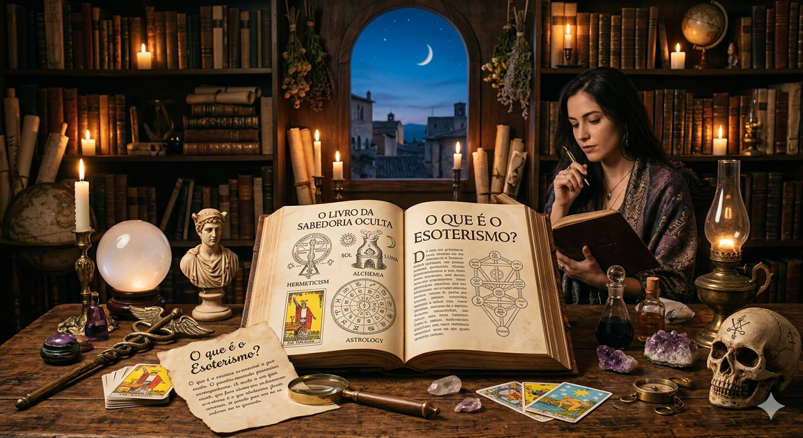
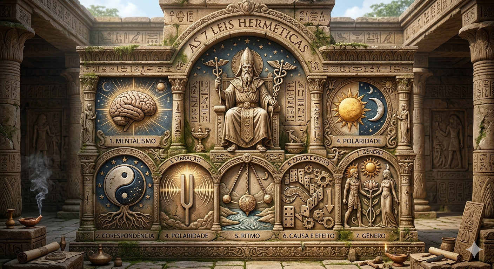
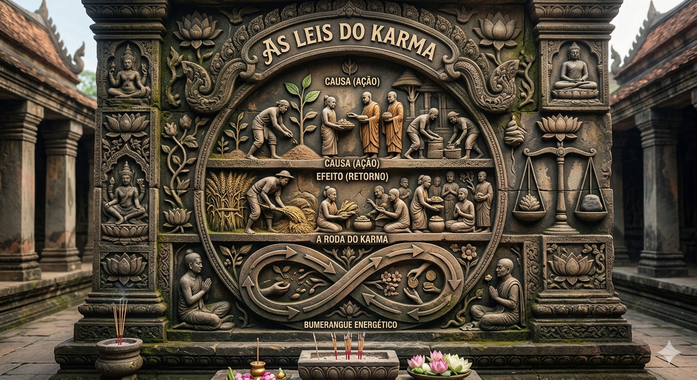
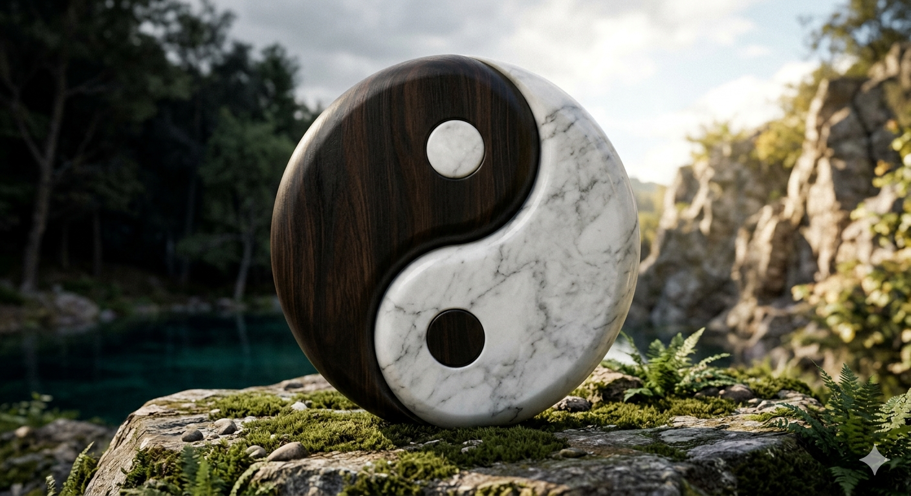
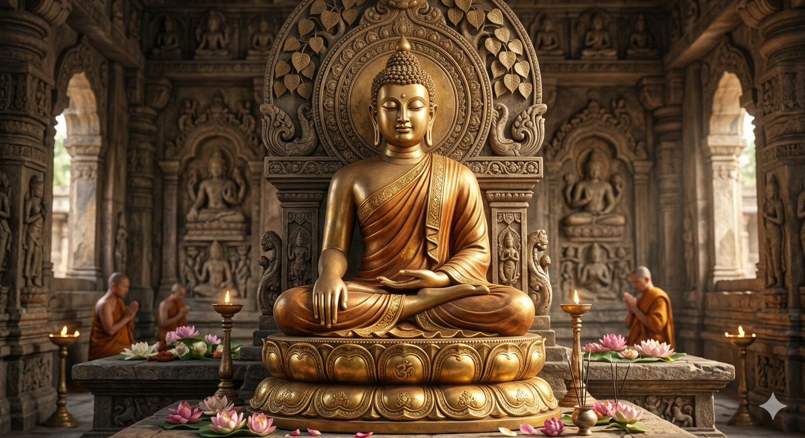

O que é o Esoterismo?

Diferente do que o senso comum dita, o esoterismo não está ligado a superstições cegas ou dogmas religiosos. Ele representa uma corrente filosófica milenar que busca desvendar as verdades ocultas por trás da realidade material. A palavra tem origem no grego esôterikos, que se traduz como "interno" ou "aquilo que está voltado para dentro".
O objetivo fundamental do estudo esotérico em nosso portal é fornecer ferramentas práticas para que você decodifique a engrenagem invisível do cosmos. Trata-se da reconexão consciente entre o microcosmo (o ser humano e sua psique) e o macrocosmo (o universo cósmico). Utilizando sistemas codificados como a numerologia, a astrologia e a alta filosofia oculta, você assume o papel de arquiteto e mestre de sua própria jornada.
As 7 Leis Herméticas

Baseadas nos ensinamentos atribuídos a Hermes Trismegistus (o três vezes grande) e compiladas no manuscrito seminal O Caibalion, estas sete leis são os axiomas fundamentais que governam a estrutura do tecido da realidade. Compreender a mecânica dessas leis é o primeiro e mais crucial passo para o despertar do seu Instinto Superior.
1. Mentalismo
"O Todo é Mente; o Universo é mental." A matéria é uma manifestação da consciência. Tudo o que existe foi concebido e estruturado no plano sutil do pensamento antes de colapsar na realidade física.
2. Correspondência
"O que está em cima é como o que está embaixo; o que está dentro é como o que está fora." Existe uma harmonia matemática entre os diferentes planos de existência. Os padrões que governam as galáxias espelham os padrões de um átomo.
3. Vibração
"Nada está parado; tudo se move; tudo vibra." A física moderna confirma o esoterismo: a diferença entre as manifestações da matéria, da mente e do espírito resulta puramente de suas diferentes frequências vibratórias.
4. Polaridade
"Tudo é duplo; tudo tem polos; tudo tem o seu oposto." Os opostos são, na verdade, idênticos em sua natureza intrínseca, variando apenas em grau. O amor e o ódio, o frio e o calor, são apenas extremidades de uma mesma régua.
5. Ritmo
"Tudo tem fluxo e refluxo; tudo tem suas marés; a medida do balanço à direita é a mesma da esquerda." O universo funciona em ciclos perfeitos de compensação. Aprender a neutralizar o balanço negativo do pêndulo é o segredo da maestria emocional.
6. Causa e Efeito
"Toda causa tem seu efeito; todo efeito tem sua causa." Não existe o acaso; a sorte ou o azar são meramente nomes dados a uma lei universal cujas conexões ainda não fomos capazes de rastrear e compreender.
7. Gênero
"O Gênero está em tudo; tudo tem os seus princípios masculino e feminino." Nenhuma criação — seja ela física, mental ou espiritual — é possível sem a conjunção e o equilíbrio harmônico destas duas forças polares.
As Leis Universais do Karma

Ao contrário da visão ocidentalizada, o Karma não funciona como um tribunal cósmico focado em punição ou recompensa. Ele é a própria Lei de Causa e Efeito operando no campo moral e espiritual. Sob a ótica do Instinto Superior, compreendemos o Karma como uma força estritamente educativa e pedagógica, projetada para nos trazer autorresponsabilidade.
A Grande Lei
"Colhemos exatamente o que plantamos." A energia que você emana em pensamentos, palavras e atos é a assinatura energética que dita a natureza dos eventos que retornarão à sua vida.
Lei da Criação
O universo não responde a desejos passivos, ele responde à ação consciente. Somos co-criadores ativos do nosso destino através da união indissolúvel entre foco mental e força de vontade.
Lei da Responsabilidade
O mundo exterior funciona como um espelho implacável do nosso mundo interior. Se há caos, conflito ou estagnação ao seu redor, é um indicativo de que há áreas internas negligenciadas clamando por transformação.
Lei da Conexão
No tear cósmico, tudo está interligado. O seu passado determinou o seu presente, e as micro-escolhas que você faz exatamente agora estão costurando a tapeçaria do seu futuro iminente.
Yin e Yang: A Dualidade Primordial

Nascido no âmago da filosofia taoista, o conceito de Yin e Yang ilustra as duas forças arquetípicas fundamentais que sustentam a dinâmica da vida. Elas não são opostas no sentido de rivalidade, mas sim forças complementares necessárias para gerar o movimento e a transformação contínua do cosmos.
Yin (O Princípio Receptivo)
Associado à escuridão, à Lua, ao elemento água, à passividade fértil, à intuição e à introspecção profunda. É a energia magnética que acolhe, metaboliza, nutre e planeja no silêncio do ser.
Yang (O Princípio Ativo)
Associado à luz, ao Sol, ao elemento fogo, ao movimento expansivo, à lógica linear e à projeção. É a energia elétrica que executa, demarca limites, protege e desbrava o mundo externo.
A Semente Mutante: Observe que no símbolo tradicional do Taiji (o círculo dinâmico), há um ponto de cor oposta em cada extremidade. Isso nos ensina que nada é estático ou absoluto: o ápice do repouso (Yin) dá origem ao movimento (Yang), assim como o dia mais brilhante traz em si o germe da noite.
A Jornada de Siddhartha: O Despertar do Buda

A saga de Siddhartha Gautama personifica a busca universal pela transcendência do sofrimento. Nascido sob a promessa de reinar em um palácio blindado contra as dores do mundo, o jovem príncipe abdicou de suas riquezas e títulos ao cruzar os portões e testemunhar as quatro verdades da condição humana: a velhice, a doença, a transcendência espiritual e a morte.
Após anos de buscas austeras e de uma meditação inflexível sob as raízes da árvore Bodhi, Siddhartha decifrou a estrutura mental do ego e alcançou o estado de Nirvana (a extinção dos fogos do apego e da ilusão), transmutando-se no Buda. Ele nunca reivindicou o status de divindade, mas sim o de um médico da alma, provando que qualquer ser humano focado pode despertar de Maya (a ilusão).
O Núcleo do Despertar: As 4 Nobres Verdades
Buda estruturou seu ensinamento em quatro pilares lógicos: 1. A existência carrega a insatisfação (Dukkha); 2. A causa da insatisfação é o apego e o desejo ignorante (Samudaya); 3. O sofrimento cessa quando o apego é extinguido (Nirodha); 4. O método prático para essa extinção é o Nobre Caminho Óctuplo, que prescreve a retidão ética, mental e meditativa.
Quiromancia: A Cartografia do Destino nas Mãos
Longe de ser um truque de adivinhação vulgar, a Quiromancia é uma ciência oculta milenar que estuda os sulcos, linhas e relevos carnais da palma da mão. No esoterismo hermético, entende-se que as mãos funcionam como extensões diretas do sistema nervoso central, atuando como um painel holográfico que projeta as sinapses, tendências mentais e traumas da nossa psique profunda.
Linha da Vida
Contrariando os mitos, ela não prevê a data da sua morte. Ela quantifica a sua vitalidade biológica, a força do seu sistema imunológico, a resiliência física e a qualidade das âncoras energéticas durante a jornada terrena.
Linha da Cabeça
Mapeia a arquitetura cognitiva do indivíduo. O seu comprimento e inclinação revelam como você processa dados, toma decisões sob pressão e se possui uma inclinação mental voltada à lógica analítica ou à criatividade abstrata.
Linha do Coração
Analisa a topografia emocional do ser. Revela como a pessoa gerencia afetos, vulnerabilidades, dinâmicas de relacionamentos e a capacidade psicológica de expressar empatia ou recolhimento emocional.
Os Montes Planetários
As almofadas carnudas localizadas na base dos dedos representam os receptores de frequências astrológicas correspondentes (Monte de Vênus para magnetismo, Júpiter para ambição, Saturno para disciplina), sinalizando traços natos do caráter.
Segredo da Leitura Hermética: A mão não dominante (geralmente a esquerda) codifica o seu mapa genético-espiritual ancestral, ou seja, as ferramentas com as quais você nasceu. A mão dominante (geralmente a direita) registra o que você está fazendo ativamente com esse potencial através do seu livre-arbítrio.